|
|
HELP FIND THE FOLLOWING LOCATIONS
PAGE 64
DEPARTMENT
S:
The Ghost of Mary
Burnham (Cyril Frankel
: 1968)
May be in the main
street of Sils im Engadin/Segl
in Switzerland in front of the Post Hotel : Sir
Curtis and Stewart
Sullivan discuss the Mary Burnham case in a cable car at an Alpine ski
resort.
(Identified by by Pierre Alfonsi,
December 2014)
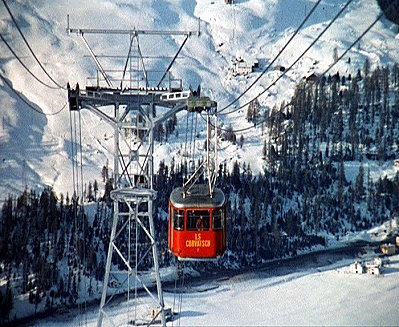
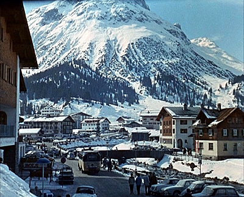
DEPARTMENT S:
A Fish Out of Water
(Cyril Frankel: April 1969)
Unknown 1 - On
his arrival in Beirut
Interpol agent Birney is told of the many sights he can see in the
town. Later Takla’s
men drive through Beirut to collect Jason King from Michele Duplay’s
flat.
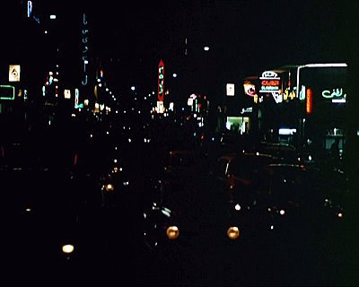
 Probably
Pyramids Road, Cairo.
Probably
Pyramids Road, Cairo.
Shahrazade, 3 Alfy Street, Cairo - The Scheherazade Nightclub - On his arrival in Beirut Interpol agent Birney is told of the many sights he can see in the town. (WB 11511)
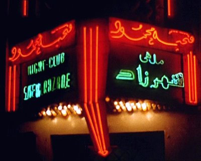
Unknown 2 – A pair of sunbathers are enjoying the beach near Beirut when they make a macabre discovery.
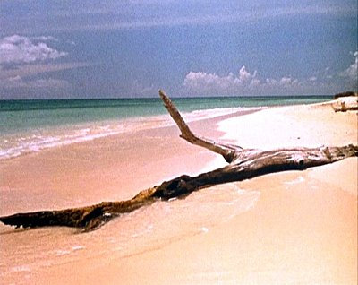
Tzuk Tamrur - half-way along(31), the Arad-Sodom road, Israel - Stewart Sullivan and Annabelle Hurst drive across the desert from Damascus to Beirut to meet Jason without being spotted at the airport.
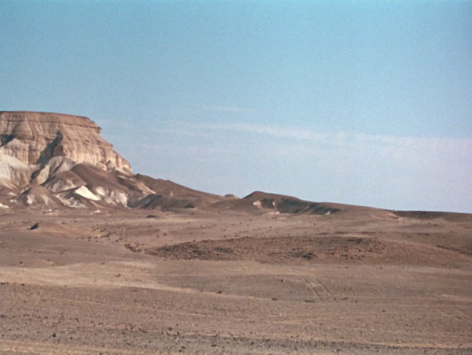
Titchfield Road, London, NW8 - Jason and Annabelle are watching Michele Duplay’s flat in the Century Building while Stewart Sullivan searches it. They see one of Takla’s men arrive. (Identified by Sandgrounder, September 2022)
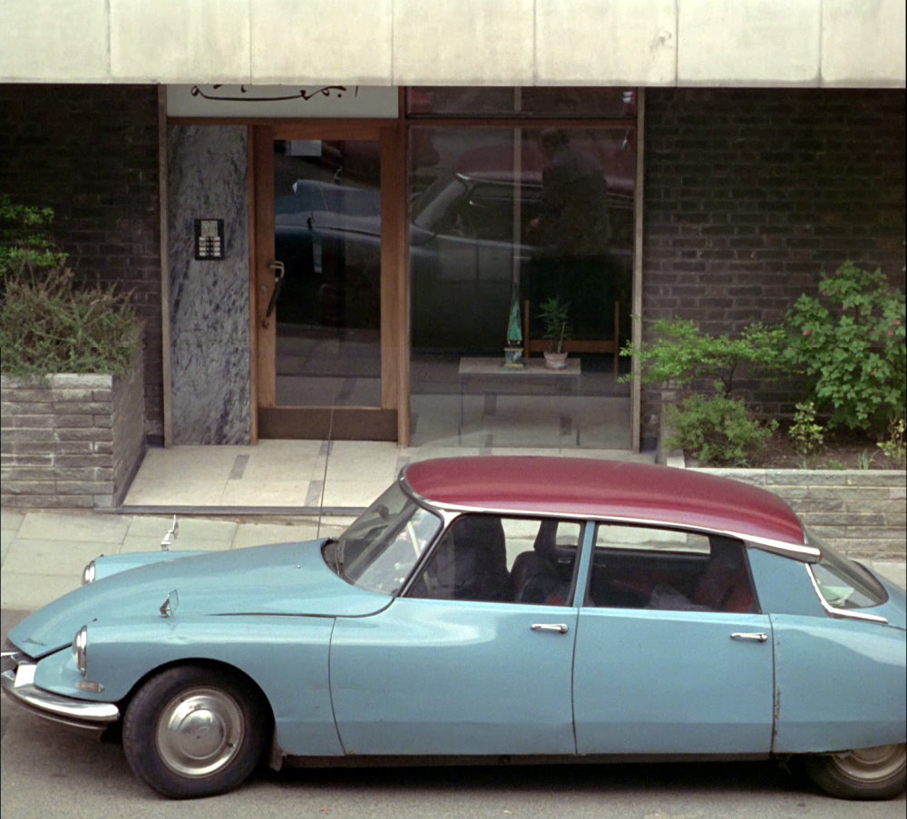
M10 -
Michele Duplay drives from Rafic’s
villa to her flat in the Century Building, Beirut, to collect her
passport.
(Identified by Goeff Dodd, November 2011)
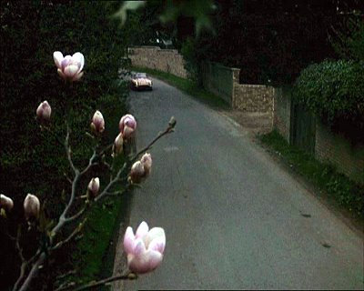

DEPARTMENT
S: Six
Days (Cyril Frankel: July 1968)
Brompton Road, London SW1
– Stewart drives Sir Curtis
home after a long night at London Airport.
(Identified by Geoff Dodd, July 2023)

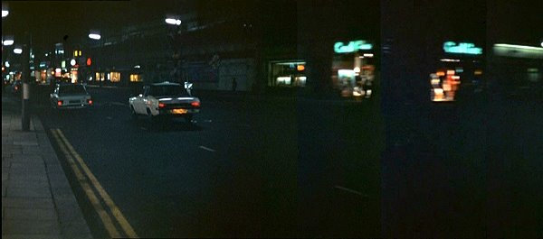
Unknown 2 – Sir Curtis is about to fly out to France so Stewart rides with Sir Curtis so he can discuss the case.
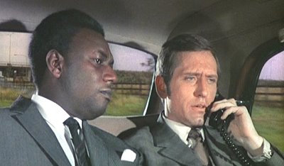
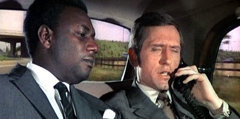
DEPARTMENT S:
The Shift That Never
Was (John Gilling: Autumn
1968)
Lysia Street, SW6:
Annabelle is taken by
Frank, Johnny and Sam as they shift the tanker from the Warehouse.
(Identified by Geoff Dodd, June 2017)

Hams Hall Power Stations, Warkickshire (demolished) - Northover Atomic Power Station


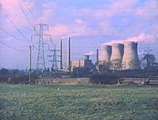
 World
Backgrounds
Clip 10518, 1718, 10152, 9216, 10061 – these could all be in the same
complex.
World
Backgrounds
Clip 10518, 1718, 10152, 9216, 10061 – these could all be in the same
complex.
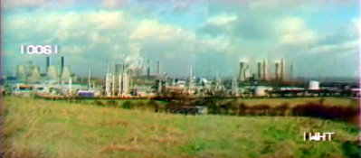
Unknown 3 – Establishing shot of oil tanker makes its way to oil depot by London docks.
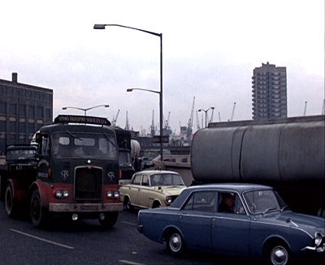
 Oil depot is on Stevenage Rd SW6. The
flats look like the
ones that overlook The Royal Docks/Docklands Airport
Oil depot is on Stevenage Rd SW6. The
flats look like the
ones that overlook The Royal Docks/Docklands Airport
Unknown 6 - Stewart Sullivan and Jason King drive to the Northover Atomic Power Station in the hope of finding Annabelle.
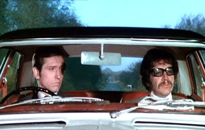
 A
few shots of Hillfield
Lane
and tankers used in this sequence, but this shot does not fit in with
these.
Could be reused Ashridge/Ivinghoe
Beacon
footage
A
few shots of Hillfield
Lane
and tankers used in this sequence, but this shot does not fit in with
these.
Could be reused Ashridge/Ivinghoe
Beacon
footage
Unknown 7 - Stewart Sullivan and Jason King drive to the Northover Atomic Power Station in the hope of finding Annabelle.
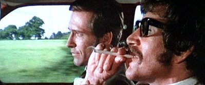
Unknown 8 - Miss Mortimer collects her fiancé and drives him to Northover Atomic Power Station for the commissioning of the new reactor.
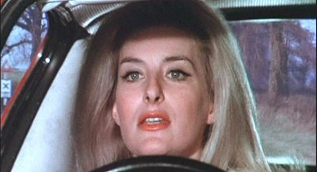
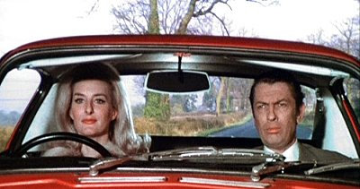
DEPARTMENT
S: Who
Plays the Dummy? (John Gilling: Autumn 1968)
Silent Valley, County Down, Northern Ireland - The Sierra de Guadarralama,
Spain, September 12th
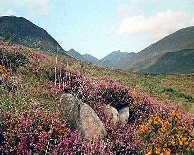
Unknown 1 -The Sierra de Guadarralama, Spain, September 12th
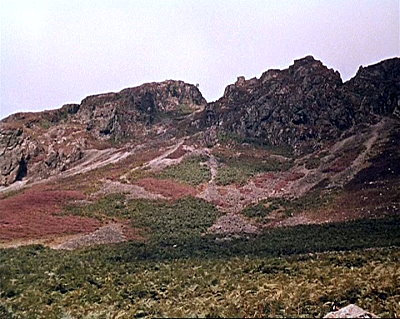
DEPARTMENT
S: The
Double Death of Charlie Crippen (John Gilling: Autumn 1968)
Unknown 1 - A group of assassins are lying in
wait for their target
in the hills near Naples.
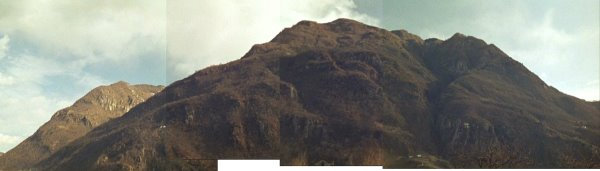
Unknown 2 - A Rolls Royce carrying a VIP and a very nervous chauffer along a road by the Bay of Naples. Later, the assassins, in a VW camper van, chase after Stewart Sullivan and the fake King Frederick as they drive away from the villa.
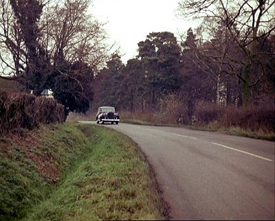
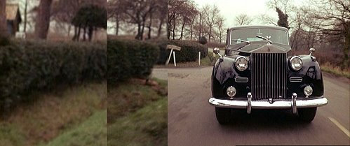
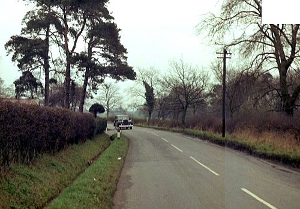
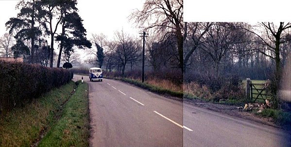
Unknown 3 - A Rolls Royce carrying a VIP and a very nervous chauffer along a road by the Bay of Naples. They are nearing the spot where a land mine has been planted.
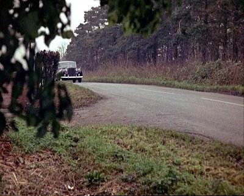
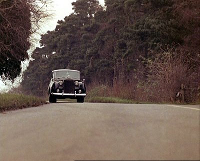
Unknown 5 - Stewart Sullivan drives his red Peugeot to interview the farmer who first discovered the wreck of Charlie Crippen’s car.
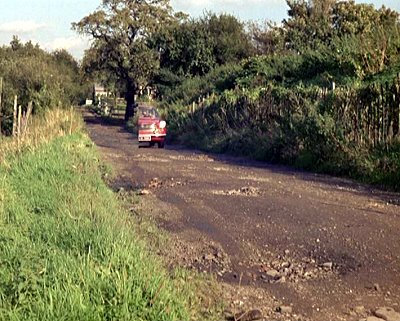
Unknown 7 - The assassins, in a VW camper van drives towards Villa Fantelle with the intention of killing everybody there. Soon after, the assassins chase after Stewart Sullivan and the fake King Frederick as they drive away from the villa.
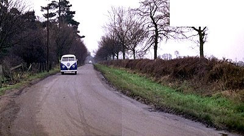
Unknown 8 - Stewart Sullivan and the fake King Frederick drive away from the villa in Stewarts his red Peugeot in the hope of luring away the assassins.
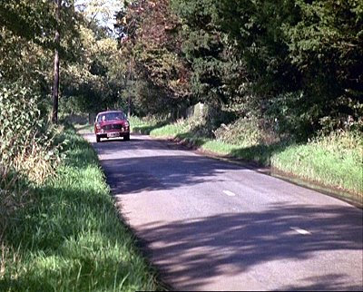
Unknown 9 - With the assassins, in a VW camper van, hot on their heels, Stewart Sullivan decides that he and the fake King Frederick should leave the Peugeot and continue on foot. The assassins arrive, but so do the police and a gunfight ensues.
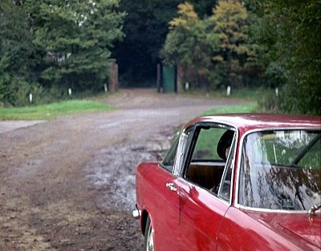
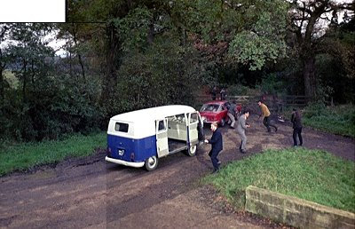
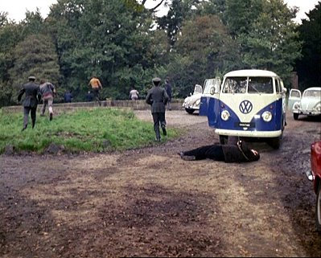
Unknown 10 - Jason drives his red Bentley to pay a call on Villa Fantelle. Later Stewart Sullivan and the fake King Frederick drive away from the villa in Stewarts his red Peugeot in the hope of luring away the assassins.
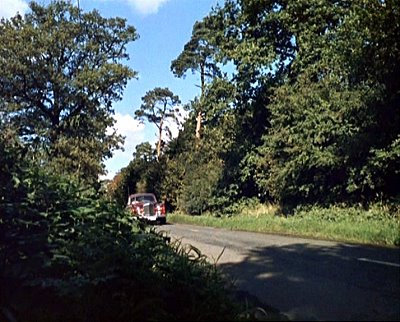
Unknown 11 - Stewart drives Annabelle and Sir Curtis to Villa Fantelle in the hopes of finding Jason there.
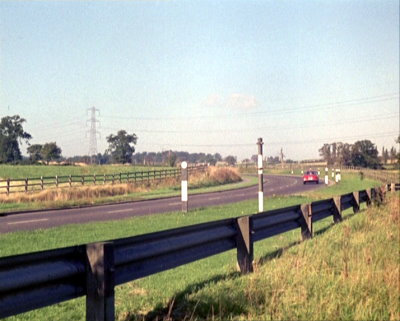
Think you know a spot? Need a bigger image? Email me.
< Previous | Index | Avengerland | Next >
Copyright © 2021 Anthony R. McKay